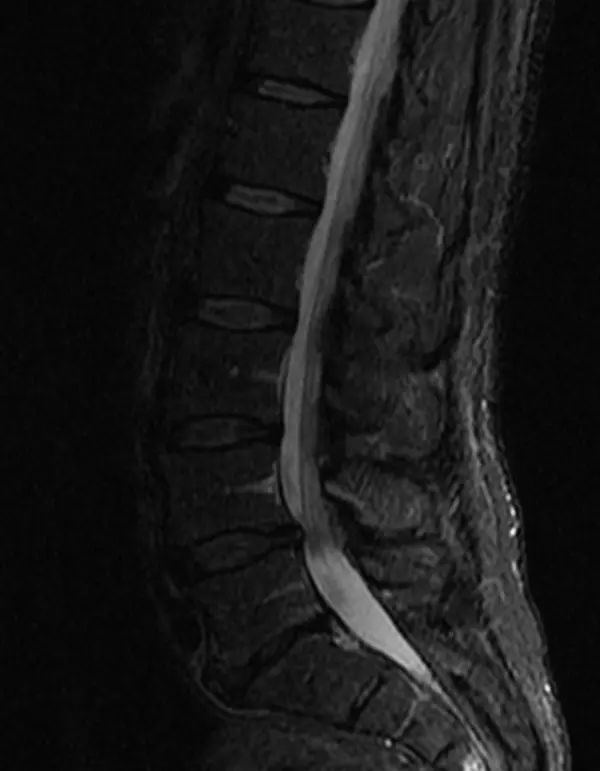
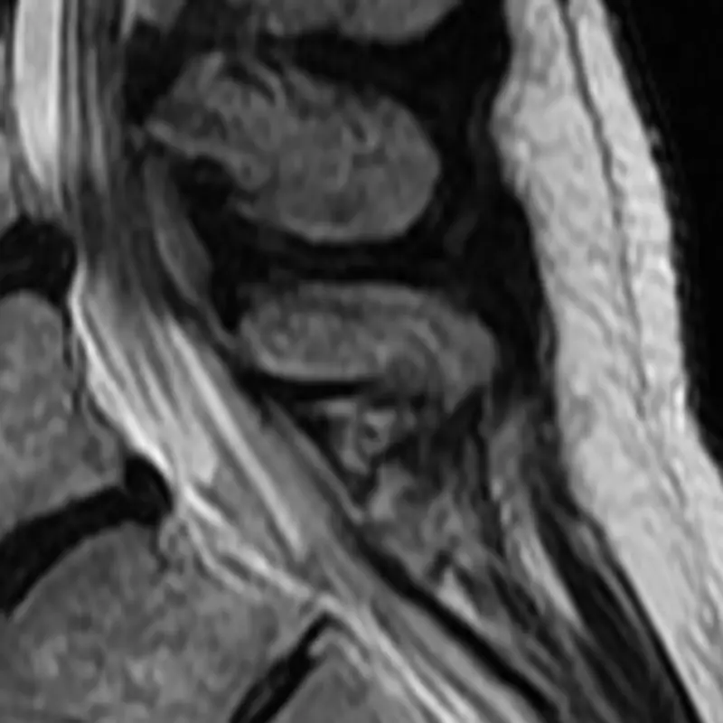
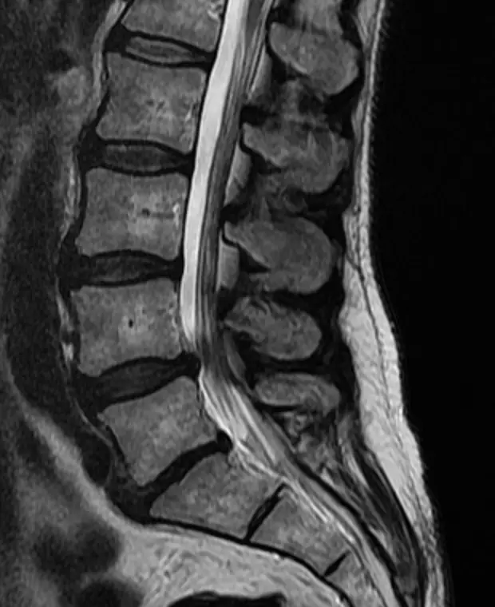
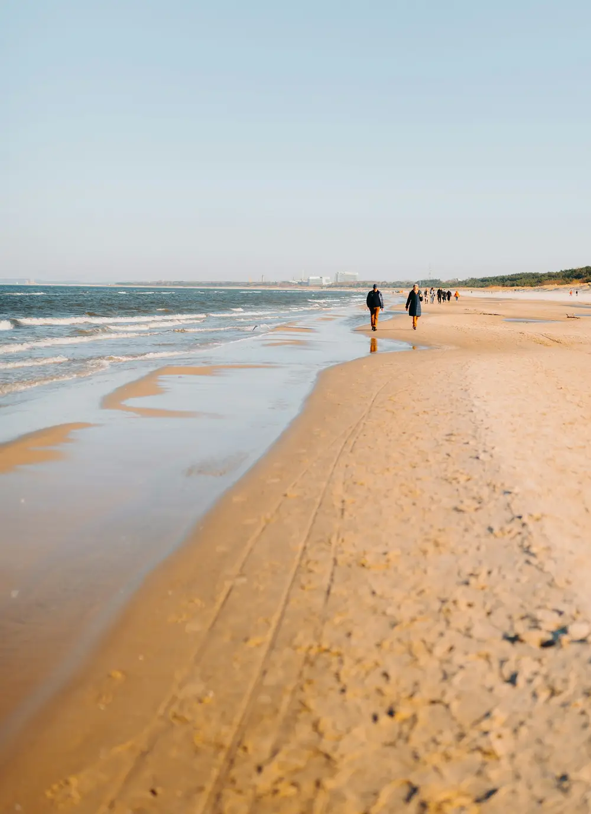
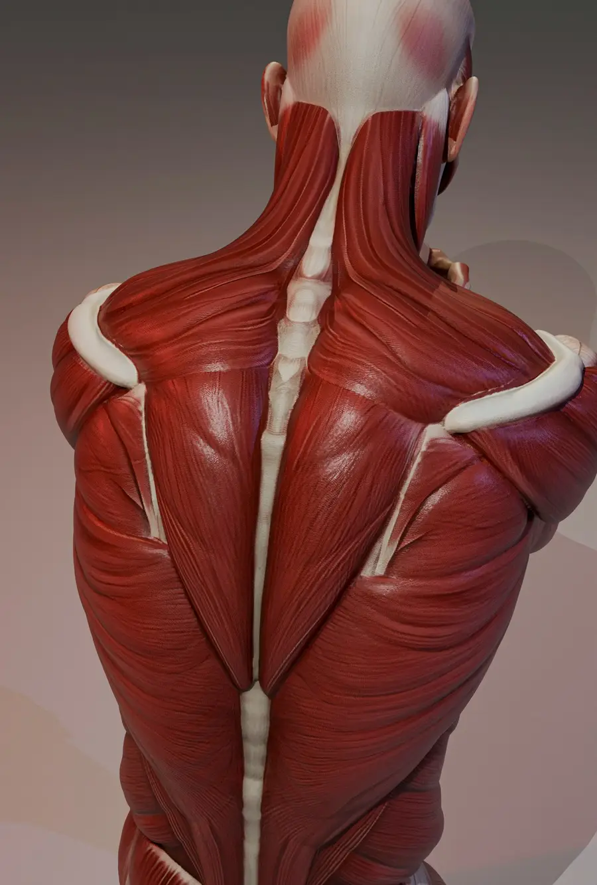
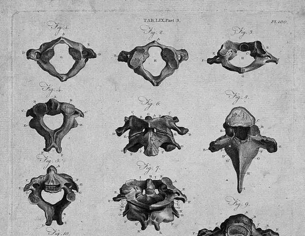
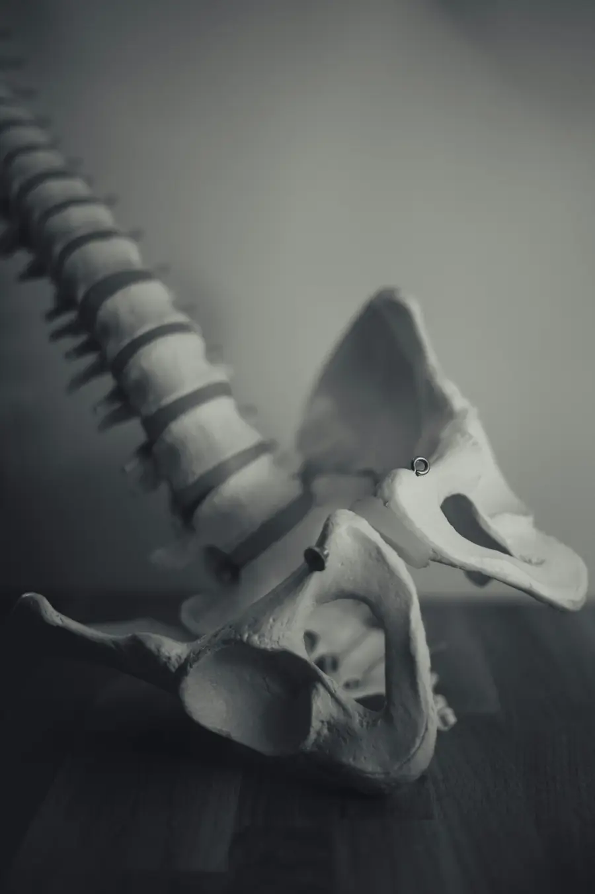
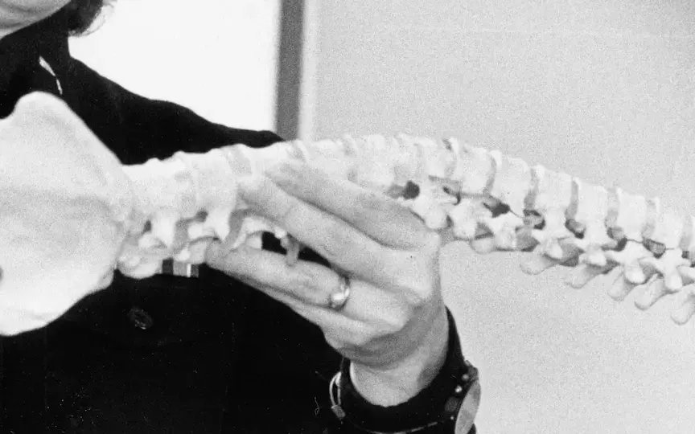
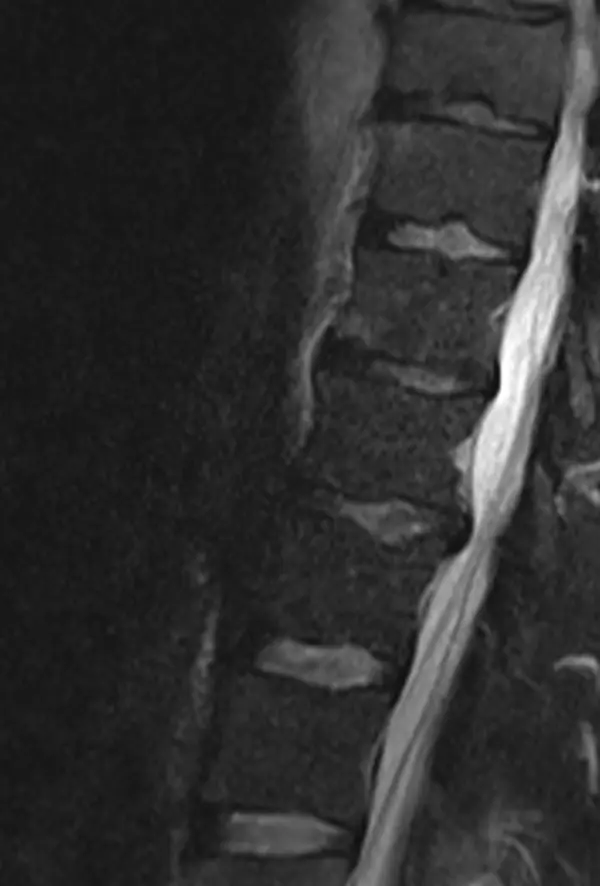
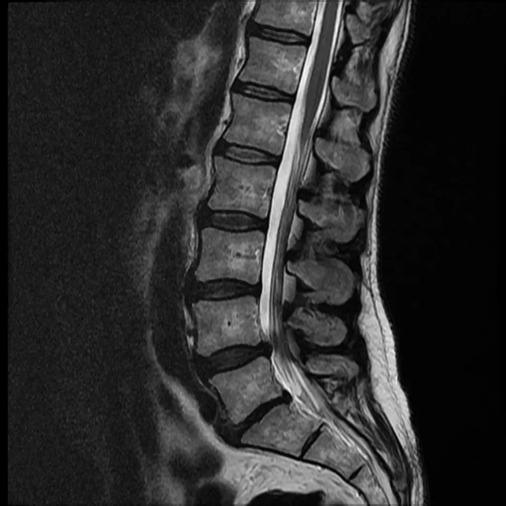

Zweitmeinung vor der OP
Eine unabhängige Einschätzung, bevor Sie zustimmen.
Dr. med. Christoph Manicke, Neurochirurg in Kiel. Unabhängige Beratung vor und nach Operationen an der Wirbelsäule.
Eine Operation   
Wählen Sie den Abschnitt, in dem Ihre Beschwerden sitzen. Sie sehen, was dort typischerweise dahintersteckt und wobei ich berate.



Nackenschmerz, der in Schulter und Arm ausstrahlt, Kribbeln oder Kraftverlust in den Händen, manchmal ein unsicherer Gang.
Gürtelförmiger Schmerz zwischen den Schulterblättern oder um den Brustkorb, nach einem Sturz oder bei Osteoporose.
Kreuzschmerz, der ins Gesäß und Bein zieht, Taubheit am Fuß, Beine, die beim Gehen nach wenigen Minuten schwer werden.
Tiefer, einseitiger Schmerz über dem Gesäß, schlimmer beim Aufstehen, Treppensteigen oder langen Sitzen.
Alle Erkrankungen des neurochirurgischen Fachgebiets, mit dem Schwerpunkt Wirbelsäule.

Eine unabhängige Einschätzung, bevor Sie zustimmen.

Beratung, wenn Beschwerden geblieben oder neu aufgetreten sind.

Das ganze Behandlungsspektrum, nicht nur der Eingriff.
Vorfall, Stenose, Wirbelgleiten.
Erkrankungen der Nerven und Wirbel, vom Hals bis zum Becken.
Vom ersten Anruf bis zu einer klaren Einschätzung, in vier Schritten. Tippen Sie auf einen Schritt, um ihn zu öffnen.
Termine nach Vereinbarung unter 0172 6347706 oder per E-Mail. Am Telefon klären wir, worum es geht und was Sie mitbringen.
MRT- oder CT-Bilder auf CD oder als Link, Arztbriefe, die OP-Empfehlung, falls es eine gibt, und Ihre Medikamentenliste.

Ihre Geschichte, die Untersuchung und die Bilder, nebeneinander. Sie erfahren, was eine Operation leisten kann und welche Wege es sonst gibt.
Mit einer klaren Einschätzung entscheiden Sie selbst, in Ruhe und mit allen Informationen.
Burgstraße 2 in der Kieler Innenstadt. Die Praxis liegt im 4. Stock und ist mit dem Aufzug erreichbar. Sprechstunde nach Vereinbarung.
Dr. med. Christoph Manicke ist Neurochirurg mit dem Schwerpunkt Wirbelsäulenerkrankungen.
„Liebe Patientin, lieber Patient, ich freue mich, Sie in meiner Praxis in Kiel begrüßen zu dürfen!“
Die Praxis ist eine Privatpraxis für privat Versicherte und Selbstzahler. Gesetzlich Versicherte können als Selbstzahler kommen.
Nach Vereinbarung, telefonisch unter 0172 6347706 oder per E-Mail an christoph.manicke@gmx.de. Eine Online-Buchung gibt es nicht.
Abgerechnet wird nach der Gebührenordnung für Ärzte (GOÄ). Ob Ihre Versicherung die Kosten übernimmt, klären Sie am besten vorher mit ihr.
Ihre aktuellen MRT- oder CT-Bilder auf CD oder als Link, Arztbriefe und Befunde, die schriftliche OP-Empfehlung, falls es eine gibt, und eine Liste Ihrer Medikamente.
Ja. Auch nach einer bereits durchgeführten Operation ist eine Beratung möglich, etwa wenn Beschwerden geblieben oder neu aufgetreten sind.
Die Praxis liegt im 4. Stock der Burgstraße 2 und ist mit einem Aufzug erreichbar.
Ihr E-Mail-Programm öffnet sich mit einer fertigen Nachricht. Den Abschnitt übernehmen wir aus Ihrer Auswahl oben.
Lieber sprechen? 0172 6347706